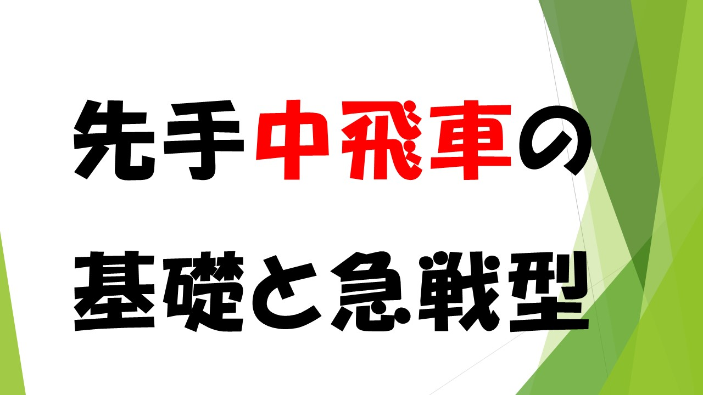

初心者が学ぶ先手中飛車の基礎と急戦型Part3
今回は分岐点の手順を一つ一つ調べていきます。
前の記事はこちらへ
42手まで先程の手順を同様に行いますが、ここで相手の立場に立ってとがめてください。
ヒントは△７四歩と突いてた理由が分かれば、手順がおおよそ思いつくでしょう。
次に△８八飛でほぼ囲いが崩壊している。
この後の展開はまだまだ難しい戦いが続きます。
39手目に戻り、▲８五歩と７一角を後回しにして角を持ち駒にします。
端歩が突いていない状態での対局
端に打つ余裕がなければ、▲８九角と打ち込み、△８六歩は手筋だが、
丁寧に受ける。
まだまだこれからだが、攻めが続きそうな展開です。
△6九書くと打たれて失敗する。
そこで先手４四の地点を狙う。
初心者の方はここまでご覧になって、かなり混乱されているかもしれません。
一回だけで習得できないので、何度も確認して、ご自身で指してみて
はじめて習得できます。
私自身も結構勉強になりました。
ここまで将棋ソフトなしでプロ棋士同士が研究して本戦に臨むとなると、
物凄く骨が折れることをされています。
一部の定跡を使っていましたが、これからが定跡の面白いところに行きます。
一手一手が物凄く、意味ある一手でかなり緻密です。
あと、二回で実践の棋譜録（将棋ソフト）をして中盤～終盤にかけて
徹底して調べます。持久戦は実践棋譜録が終わったら再開します。